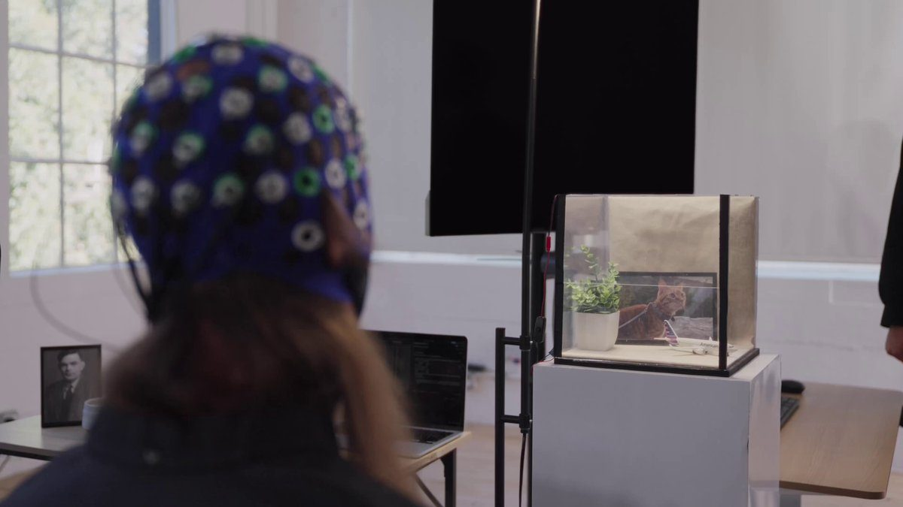
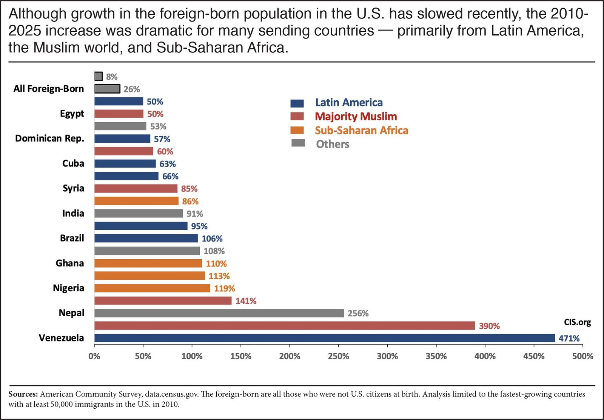
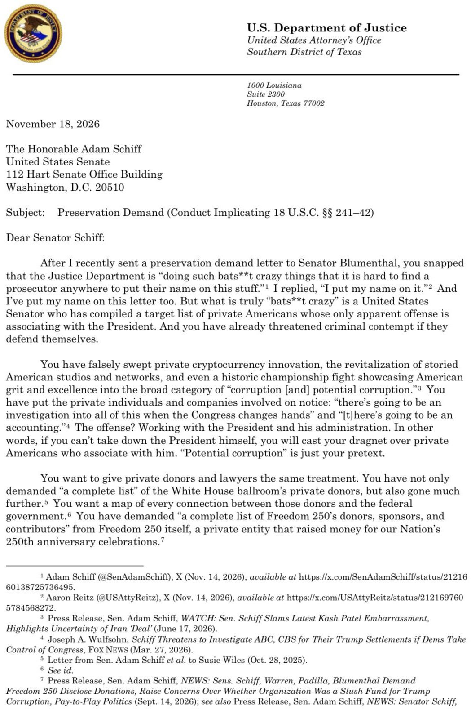
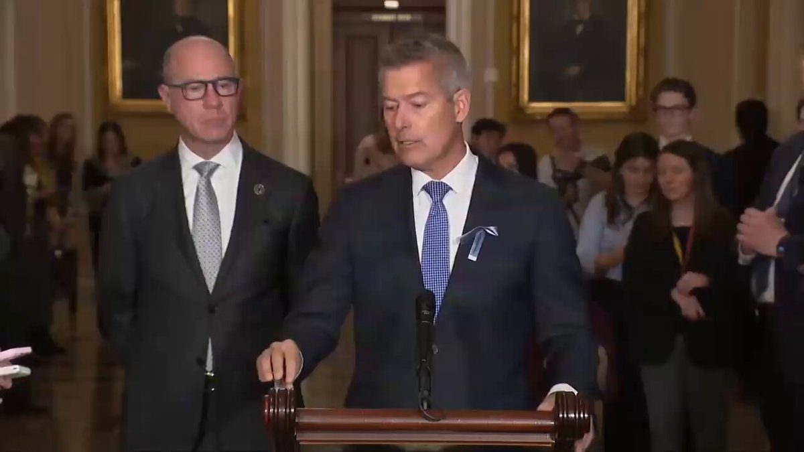

BREAKING: President Trump, President Putin, and President Xi officially meet and shake hands.
This marks the first-ever trilateral meeting between the sitting presidents of the US, Russia, and China. https://x.com/RT_com/status/2123018314943479888
Selling Oculus to Facebook in 2014 gave me money for helicopter flight lessons and developing a seastead called SLAB with a 1,000 year design life.
The goal was to be cheaper than land and absent state/local laws that cripple critical American industries like metal processing, medical research/treatment, desalination, oil refining, chemical engineering, and more. Me and a few close friends cashed it up at a $1B valuation back in 2017, and while it still has a long way to go, there has been significant progress towards my goal of reviving manifest destiny and westward expansion. At a time when most of the seasteading community wanted to escape the US and smoke pot, this was the one project explicitly designed to make America stronger, a relief valve for ill considered or outdated rules and regulations.
I am only talking about it now because a few media outlets got wind of me and some friends topping up the coffers and plan on calling SLAB my new floating AI datacenter project. It is way cooler than that, way older than that, and I hate looking like a hype-chasing consensus loser, so now you have to read this tweet.
Researchers have used reinforcement learning to teach a 5-tonne John Deere skid-steer loader to perform complex acrobatic manoeuvres autonomously. Trained in simulation and transferred to a real machine, the system can balance on two wheels, navigate rough terrain, spin, and control its bucket before landing safely.
The research demonstrates the potential of AI-driven automation for heavy construction and industrial machinery.
Video Credit: @leggedrobotics / @ETH
Paper: https://sites.google.com/leggedrobotics.com/heavy-metal-acrobatics
#engineering #technology
▶ Watch on XIntroducing AIR-O, a model that decodes what a person is attending to directly from brain scans.
Using only noninvasive brain data, we can generate an image from scratch in real time that depicts where a person is focusing their attention.
This is the first of a new generation of algorithms that can read the shape of thoughts directly from brain activity.

▶ Watch on XChinese autonomous tractors Honghu T200 plow the fields
The machine can also sow seeds and tend crops
▶ Watch on XIn collaboration with @ndstudio, we’re excited to share that EDGAR content is now available through https://america.gov/ 🎉
This enhancement expands access to market information, helping investors, researchers, market participants, and the public interact with EDGAR data in new, informative ways.
Check it out below ⬇️
JUST IN: AI agents outperformed KPMG accountants in a pilot audit, “the AI was able to go so much deeper...[it] asked better questions” says their Head of Audit, per the FT.
The XRP Ledger Foundation has completed the attestation of the XRP Ledger against the Global Layer One (GL1) Market Infrastructure Toolkit.
It is the first public, permissionless layer-1 blockchain to have the toolkit's Architecture and Resiliency principles independently verified.
GL1 is a multilateral initiative between global financial institutions and policymakers to foster an ecosystem of compatible financial infrastructures upon which tokenised assets can be transacted seamlessly across borders.
The toolkit assesses networks for tokenised assets across ten principles, built on international standards such as the Principles for Financial Market Infrastructures (PFMI) and emerging industry best practices.
For banks and asset managers, it is a standards-based reference for their own due diligence on the XRP Ledger.
More details: https://pages.xrpl.foundation/xrp-ledger-gl1/
Under the leadership of @POTUS and @SecScottBessent, @USOCC is fulfilling its mandate to maintain the relevance of the federal banking system and its ability to meet the evolving financial needs of the American people. Read @USComptroller Jonathan V. Gould’s remarks about the OCC’s accelerated pace of execution and continued efforts to reform bank supervision, open the federal banking system to new entrants, and embrace responsible innovation to drive economic growth. https://www.occ.gov/news-issuances/news-releases/2026/nr-occ-2026-102.html
Between 2021 and 2025, the foreign-born population grew nearly 7 times faster (11.4%) than the U.S.-born population (1.7%).
Over the longer period from 2010 to 2025, the foreign-born population grew more than three times faster than the U.S.-born population — 26.2% vs. 8.2%.
The largest percentage increases in immigrants in the U.S. from 2010 to 2025 were for Venezuela, up 471%; Afghanistan, up 390%; Nepal, up 256%; Bangladesh, up 141%; Nigeria, up 119%; Kenya, up 113 %; Ghana, up 110%; Burma, up 108%; and Brazil, up 106%.
Read more: https://cis.org/Camarota/Growth-Immigrants-Some-Countries-and-Regions-Has-Been-Enormous

BREAKING: MINNESOTA LAWMAKER-ELECT’S WIFE IS IN THE U.S. ILLEGALLY
Ayan Ahmed Aidid, the wife of newly elected Minnesota state lawmaker Abdi Daisane, is a 30-year-old Somali national who illegally crossed the southern border on April 2, 2023.
She was apprehended by CBP but then RELEASED into the country by the Biden administration without proper vetting and has since remained in the U.S. illegally.
Our nation’s immigration laws apply to EVERYONE, and the men and women of ICE will enforce them, regardless of political status or power.
https://alphanews.org/exclusive-dhs-says-incoming-dfl-lawmaker-abdi-daisanes-wife-is-in-u-s-illegally-daycare-cited-12-more-times/
#BREAKING: Somali wife of Minnesota lawmaker-elect is an illegal, ICE confirms.
President Donald J. Trump arrives in Shenzhen, China, where he is greeted by President Xi ahead of the APEC Summit. 🇺🇸
"Today's deal lays the foundation for a much stronger trading relationship," says @POTUS.
"Thailand will eliminate all tariffs on U.S. exports... and remove substantial non-tariff barriers on American vehicles, medical devices, pharmaceuticals, ethanol, and poultry."
BREAKING 🚨 @SecWar @PeteHegseth signs historic U.S.-Venezuela military cooperation agreement.
▶ Watch on X@SenAdamSchiff has vindictively threatened private Americans with congressional punishment for associating with President Trump.
He seems bloodthirsty to weaponize Congress starting in January.
I’m demanding he preserve documents so we can see what’s really going on.

.@SecDuffy: In four years, Biden transitioned 19% of the old network from copper to fiber or analog to digital. In just one year, we've done over 50% — so we're moving at a different speed because we think the moment is NOW to actually fix the system.

▶ Watch on XBREAKING: US oil prices fall below $82/barrel for the first time since August 27th.
Gas prices just posted their largest single-day drop in 18 years.
JUST IN: 🇺🇸🇺🇦 US Republicans reportedly seek to cut Ukraine aid from the defense budget.